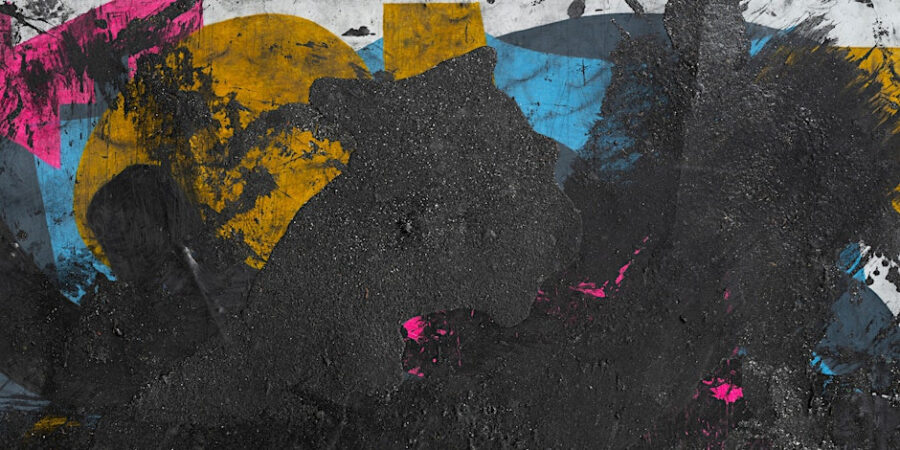

Life Imitates Art
We are pleased to present Life Imitates Art a group exhibition curated by artist, activist, and cultural organizer Hank Willis Thomas.
Life Imitates Art is anchored by eight works by Hank Willis Thomas, comprising lenticular works and new and recent retroreflectives. Presented together, these works foreground Thomas’s ongoing investigation into how images move between personal, political, and collective realms. Interwoven throughout this central presentation are works by a broader group of artists, whose practices engage Thomas’s curatorial prompt and the exhibition’s title, Life Imitates Art, operating as a collective dialogue, complementing and extending the exhibition’s exploration of representation, history, and cultural inheritance.
Life Imitates Art brings together a diverse group of artists engaging with the shifting boundary between representation and reality. Participating artists reflect on how the images, symbols, and motifs that circulate through culture come to define our experience of the world. The exhibition considers appropriation not only as an artistic gesture, but as a broader cultural condition where meaning is continually borrowed, reframed, and reasserted.
Thomas’s curatorial approach emphasizes the fluid movement of images between personal, political, and collective spheres. Rather than presenting a singular thesis, the exhibition highlights the multiple ways that representation shapes, and is shaped by, everyday life. The artists assembled here propose that influence, authorship, and interpretation unfold in shared space, where art and reality are mutually informing.
Please join us for the opening reception on Thursday, February 12th from 5-8pm.
Mario Ayala
Cristine Brache
Caitlin Cherry